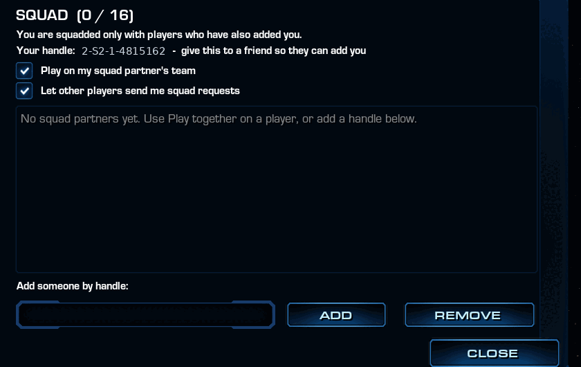
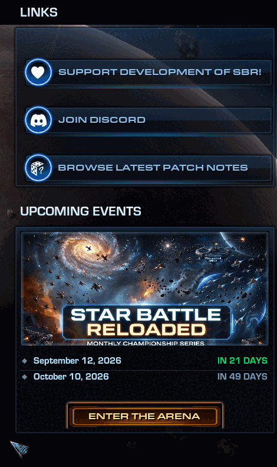

Three things change in the pool this patch: fifteen maps join, one leaves, and the standard list stops offering you the same battlefield twice over. Click any layout below to open it full size. All 31 maps are listed in the map pool catalogue, with full-size layouts, per-map figures and a guide to reading the previews — five of the standard maps also appear in the lobby as small-field variants.
Fifteen community maps join the pool, in a new Experimental category for maps that haven't been reviewed or playtested yet. They're pickable by name in the lobby — marked with a leading * so you can see at a glance that they're unproven — and there's a new Random [Experimental] entry to roll one at random.
Experimental maps are deliberately left out of Random [All], the lobby default, so nobody lands on an untested layout without choosing to. A map that plays well graduates into the Community pool and loses its *; one that doesn't gets pulled. The old Random [Misc] entry is now Random [Community].
Fourteen of the fifteen share the same tuned economy: light fighters spawn about 10% faster (1.36s vs. the usual 1.5s), heavy fighters 25% faster (48s vs. 60s), and siege fighters four times as often (90s vs. 360s). That's the author's own tuning, carried over from his originals intact. Mindfuck is the one exception and runs its own numbers — see its entry below.
Some of these maps give every object its own spawn chance, so they rebuild themselves on each load and no two matches use quite the same field; where the difference is large, both numbers are given below. Several of the later maps were drafted with LLM assistance and then fixed and tuned by hand, as VoivoD notes in the catalogue.
Tunnel to Oblivion · 227 obj
The main idea was to make a corridor at the bottom that will connect two bases. As I couldn't place bases on the bottom (SBR map editor only gives you ability to offset them), then I put them in the middle. The tunnel has passages for smaller ships. But bigger ships must go all the way through.
— VoivoD
Circle of Death · 151 obj
Basically a circle of obstacles with passages for smaller and bigger ships. There are some other obstacles at the map borders. Once bigger ships enter the circle, they must commit to exit at the other side or go back. Smaller ships have some passages to escape.
— VoivoD
Space Anomaly · 104 obj
Flips the board: red spawns top-left and blue bottom-right, where nearly every other map in the game runs bottom-left against top-right. Fault Line and Mindfuck, below, take the idea further.
Where every map makes you play up right/down left, this one changes the games direction to up left/down right, effectively disorienting (long time) players. This is the main idea behind the map. To screw everything around, to make things interesting and fresh.
— VoivoD
Two Bacons · 129 obj
A fun map in the vein of fy_iceworld or fy_pool_day in cs 1.6. One of these to give variety to map rotation and be absurd. Similar to Char/Port Zion but the corridor is longer and rotated 100 degrees or so. Effectively splitting the map to 3 fighting areas with the corridor area very dangerous to pass through.
— VoivoD
Kessel Run · 455 authored, ~191 per match
The most extreme of the semi-random layouts: 237 of its 455 objects roll at just 10% and another 102 at 50%, so only about a third of the field turns up on any given load.
This map is semi-randomly generated each time it's loaded. Or to be precise - filled with obstacles with fairly low chance to spawn. Large map, so faster farm spawn and limits. This map is different each time.
— VoivoD
Most Manly Map · 181 obj
This is a big heart of obstacles with red clouds all around it. Splits the map into two fighting areas. I added some cloud "horns" to enhance tactical play. Fun and absurd map just like "Two Bacons".
— VoivoD
Maelstrom · 104 obj
Just played this one, and the map is very good to play. This is one of the top maps, like Space Anomaly. Chaotic. Gameplay was really good.
— VoivoD
Ember Gate · 93 obj
Weird at first (no map like this one), but game was really fun. Bases are heavily fortified by obstacles, which actually makes the game a lot more balanced(!!!). There are some "vertical" obstacles, a lot of clouds, not really sure where is the actual cloud, which is unique and a plus.
— VoivoD
Islands · 88 obj
Basically few blobs of obstacles and some clouds. Solid map. When you try to pass the center obstacles as a bigger ship, you can get targeted by a torp and have a problem to outmaneuver it.
— VoivoD
Fault Line · 102 obj
One long rift of rock and cloud cuts the field from corner to corner, with a single gap through the middle — and like Space Anomaly, it plays across the opposite diagonal to the rest of the game.
Basically long obstacle carving the map into two halves, with some clouds along the rocks. In the middle, the ships can pass through a passage. The opening was: most of the ships went one half, and enemy most ships went other half. Which was funny. Also game direction rotated 90 degrees.
— VoivoD
Riptide · 94 authored, ~64 per match
The only map in the game on which every object rolls a spawn chance — there is no fixed furniture at all, so the wave bands sit somewhere different every single load.
Waves like rock formations, some clouds.
— VoivoD
Delta · 62 authored, ~46 per match
The clouds have a random chance to spawn, so every time it's a bit different. Quite good map.
— VoivoD
Crucible · 74 authored, ~58 per match
A dense knot of rock sits dead centre, right across the line the fighters run along.
This is a big blob of rocks in the center with some junk spaced apart it. Some clouds. Similar to: Most Manly Map.
— VoivoD
Binary · 58 authored, ~41 per match
It's two clusters of rocks connected by clouds. Pretty good gameplay.
— VoivoD
Mindfuck · 21 obj
The outlier of the set in every direction. Play runs straight up and down instead of diagonally, the bases sit 84 apart instead of the usual 160, and the economy runs at 3× stock across the board — a light fighter every 0.5s, a heavy every 20s, a siege every 120s — with the fighter cap cut to 100. Twenty-one objects on the entire field.
Game direction is now up and down. Bases are moved to the center, then spaced apart. There is some space behind bases. Cool looking clouds in the base, left and right of the center of the map, and in the center with few rocks. This is SBR action on steroids.
— VoivoD
Four Lanes I is out of the lobby list and both random pools after persistent negative feedback on how it played. It's still available in sandbox, in the map editor and via -map. Four Lanes II stays in the pool for now.
The standard map list has been showing you ten names for five battlefields. Every built-in layout shipped under two different skyboxes, and the lobby keyed its entries on the skybox rather than the battlefield — so Avernus and Braxis Alpha, Char and Port Zion, Skygeirr and Ulnar, Castanar and Ulaan, Deep Space and Korhal City were each the same field of play twice over, right down to the object placement.
Each pair now has a single entry, renamed to say what you're actually picking:
| Now reads | Retired duplicate |
|---|---|
| Rocks - Braxis Alpha | Avernus |
| Rocks & Cloud - Castanar | Ulaan |
| Tunnels - Port Zion | Char |
| Clouds - Ulnar | Skygeirr |
| Open - Deep Space | Korhal City |
Nothing about how these maps play has changed, and no layout was lost — the duplicates were identical to the entries that remain. What does go is five skyboxes, and the survivors were picked for how clearly gameplay objects read against the sky, not for which looked best standing still. Avernus's planet-and-sunflare is the real casualty there.
The retired backgrounds are still fully available in the map editor, in sandbox, and to saved custom maps; they're only gone from the lobby list, where the standard map section drops from ten entries to five.
Jamming Systems has stopped hiding the Frigate and started jamming the enemy instead.
The same enemy ship, in the same place, seen on radar from outside the bubble and from inside it:
Shield Booster picks up the out-of-combat shield regeneration that used to ride on Jamming Systems, at a quarter of its old strength.
Posthumous Mitosis is now called Endless Swarm, and it has been rebuilt into a full upgrade rather than a death trigger. Owning it changes how the swarm lives, not just how it dies.
Dark Swarm now heals your own side for as long as it's up. Until this patch the cloud carried no stat effect at all — it existed purely to stop ranged weapons firing into it.
Decay has been rebuilt around a different trigger, and it is now cheaper to reach, weaker at full stacks, and no longer all-or-nothing.
Brood Lord acceleration is back to where it was before 5.0 — 1.5 → 0.1875. Measured over 20 units of open space it now takes about 18.8s to arrive where it took 14.6s. That one is deliberate.
The Corruptor was carried along in the same revert (1.5 → 0.9375, 12.8s to 13.1s) and shouldn't have been — only the Brood Lord was meant to move. It will be put back.
Blinding Cloud has been rebuilt around what it was always supposed to do — blind things — and it now reaches the minions that were ignoring it entirely.
Squads used to be claimed on the Battle.net lobby screen, in public, before the game began. Everyone could see who had paired with whom, and hosts had started kicking squadded players on sight — which defeated the whole point of the feature. There are now two ways to pair, and neither of them tells the rest of the lobby anything.
The lobby slot still works, and it's private now. Two players claim the same squad number on the lobby screen, exactly as before — except the setting is visible only to the player who set it. Nobody else can see that you claimed a half, so there is nothing left to be kicked for. The cost is that you can't see your partner's pick either, so agree a number between you beforehand. If you claim a half and nobody takes the other, you're told privately at the start of the match — "Nobody took the other half of your squad." — instead of being left to wonder whether you mistyped or your partner never showed.
Your squad is also a standing list on your profile. It lives in your bank and persists between games, so you set it up once with the people you actually play with instead of re-declaring it every lobby. A pair is only honoured when both of you hold each other on your list — consent is built into how it's stored, so adding someone one-sidedly achieves nothing.

Squads no longer break team sizes. A mechanism meant to keep a pair together could seat a 12-player game as 5v7, and it fired far more often than intended — with the top-rated pair in the lobby it happened every game. It's gone, and team sizes are never bent to fit a squad.
Up to six squads can be honoured in one match, up from five. If a lobby holds more than will seat evenly, the surplus is skipped for that match — highest-rated first — and both players in a skipped pair are told; your list isn't touched, and it applies again next game.
That ceiling now counts lobby slots and list pairings together, which finally gives lobby slots an even-teams guarantee they never had: three claimed squads in a six-player game used to seat it 4v2.
Two further fixes to how squads feed team balance:
If you have a regular partner, the list is the one to use — you add each other in game once and it stands from then on, with no number to agree and nothing to redo each lobby. There's a full walkthrough with screenshots and the complete rule list.
The end-of-game screen now carries an UPCOMING EVENTS card alongside the existing links, listing the next tournament dates with a live countdown against each one — TODAY, TOMORROW, or IN n DAYS, with the nearest date highlighted. Dates drop off the card as they pass, and once they've all gone the card disappears with them. An ENTER THE ARENA button goes straight to the tournament page.

The loading screen can now hand itself over to a full-screen tournament promo. Whether you see one depends on whether an event is scheduled when the build is made — outside an event window the loading screen is exactly the one you already know. When a promo does run, the loading bar and its percentage stay on top of it, so you can still see how far along the load is.
The Toggleable Shields option and the game-data variant selector next to it have both been removed from the lobby. Both were experiments that never graduated.
Some ships stay locked until you've earned them, and veterans are meant to have a second route: your recorded match history standing in for the wins. That route has been broken for a long time. The data behind it has shipped empty since January 2022, so for most of that time it quietly did nothing for anybody, and on EU it was worse still — it consulted a table that had never existed under any name.
{kind=link}
{kind=link}
{kind=link}
{kind=link}
{kind=link}
{kind=link}
{kind=link}
{kind=link}
{kind=link}
{kind=link}
{kind=link}
{kind=link}
{kind=link}
{kind=link}
{kind=link}
{kind=link}
{kind=link}